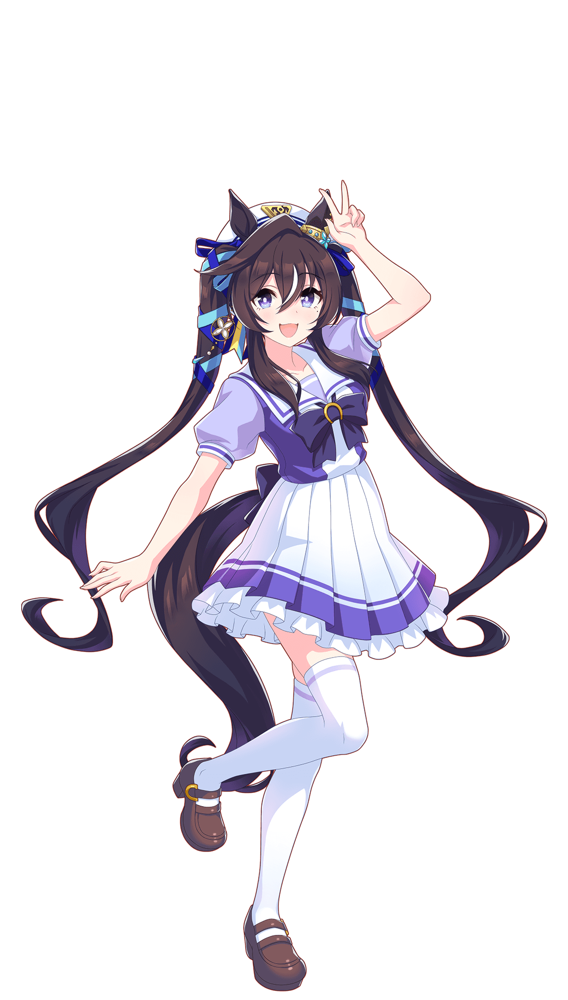
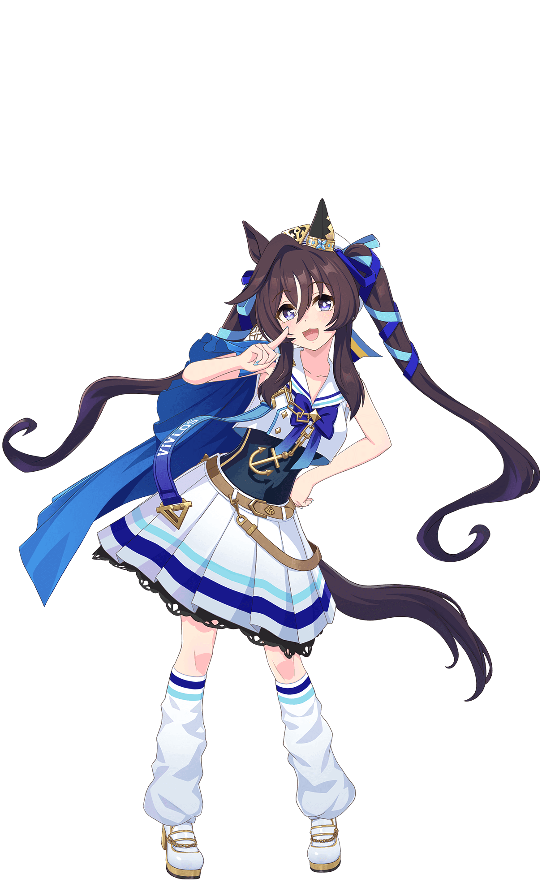
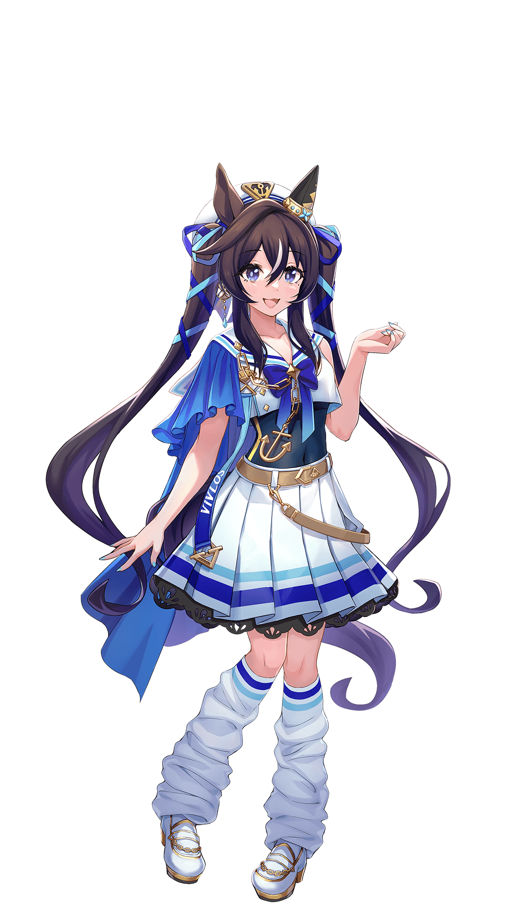
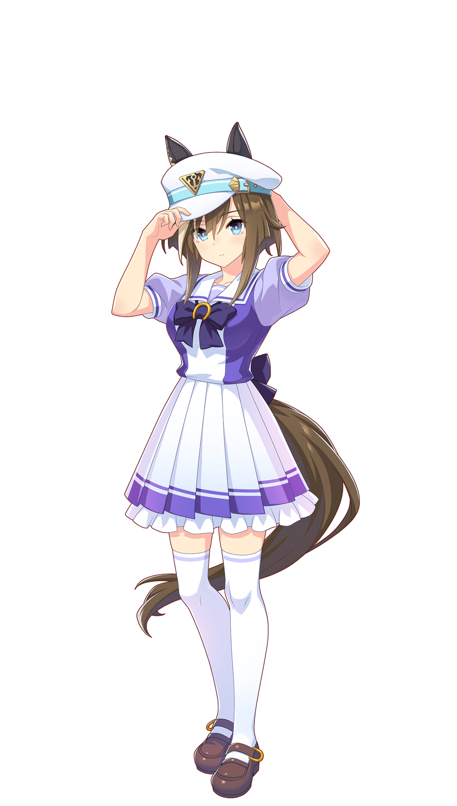
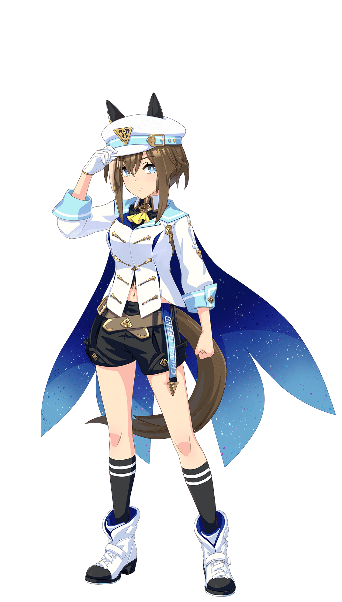
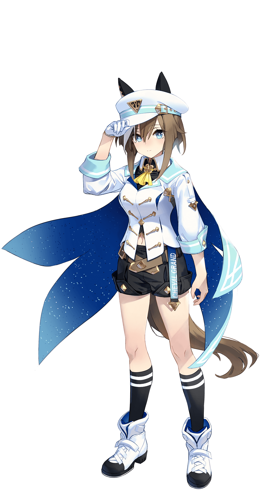
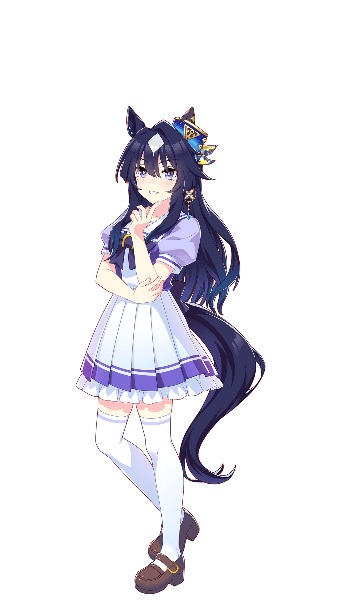
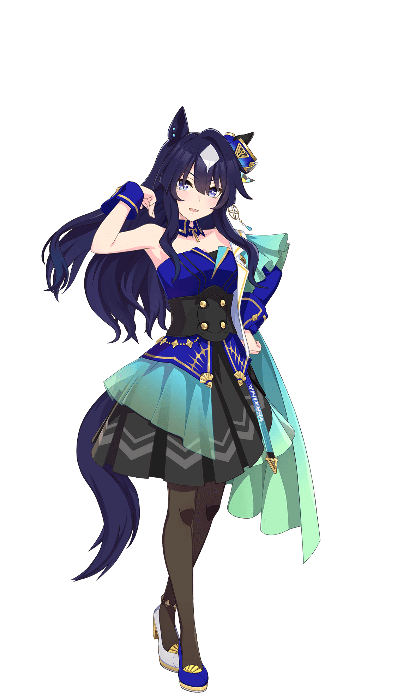

Introdução: "Eu sou Vivlos! Um dia, vou correr na glamorosa cidade de Dubai e me tornar uma celebridade ♪ Eu já me decidi ♪ Vamos juntos!"
Dubladora: Ayasa Itou
Aniversário: 9 de Abril
Altura: 156 cm | Peso: Estável
Tamanho do pé: 22 cm
Colega de Quarto: Air Messiah
Escolaridade: 7º Ano do ensino fundamental
Medidas
Busto: 81 | Cintura: 51 | Quadril: 86
Perfil e Habilidades
Ponto Forte: Lidar com o frio, beisebol, sonhar acordado em ser uma celebridade
Ponto Fraco: Ruídos distrativos, limpeza
Cauda: Ela treme de prazer quando quer ser mimada
Orelhas: Usa condicionador feito para celebridades
Curiosidades:
Ela chama o treinador de "Torecchi"
Ela usa cerca de vinte variações diferentes de "Por favor ♡"
Ela tem praticado como mimar suas irmãs para quando ficar mais alta que elas
Na vida real, Vivlos correu na Dubai Turf (G1), conquistando primeiro lugar em 2017 e segundo lugar em 2018 e 2019
Assim como suas irmãs, Vivlos pertencia na vida real a Kazuhiro Sasaki, um ex-jogador de beisebol profissional famoso que jogou tanto no Japão quanto na MLB (Seattle Mariners). É por isso que, no design das personagens, há pequenos detalhes que remetem ao beisebol ou ao status de "celebridade" do dono
Em várias artes e animações, a Vivlos é vista com aqueles brinquedos de festa chamados "língua de sogra" (que fazem barulho e esticam quando você sopra), isso reforça sua personalidade infantil e festiva
Na vida real, Vivlos era conhecida por ser muito pequena em comparação com outras competidoras. Em sua vitória no Dubai Turf, ela pesava apenas cerca de 426 kg (éguas de elite costumam pesar entre 460 kg e 500 kg). Isso é refletido em seu design no jogo, sendo mais baixa que suas irmãs
Umamusume Artes

Uniforme

Corrida

Arte Conceitual
Cheval Grand
Introdução: "...Cheval Grand... Sabe... Eu sei que pode parecer um pouco exagerado, mas... Um dia, vou dar o meu melhor para ser a maior... Não, eu serei a maior de todas"
Dubladora: Yuko Natsuyoshi
Aniversário: 14 de Março
Altura: 160 cm | Peso: Estável
Tamanho do pé: 24 cm
Colega de Quarto: Win Variation
Escolaridade: 7º Ano do ensino fundamental
Medidas
Busto: 85 | Cintura: 56 | Quadril: 80
Perfil e Habilidades
Ponto Forte: Pesca em alto-mar, beisebol, passar tempo sozinha
Ponto Fraco: Se apresentar, controle de peso
Cauda: Sua irmã costumava trançar o rabo dela sem a sua permissão
Orelhas: Quando está sozinha, ela tira o chapéu e deixa as orelhas tremularem ao vento
Curiosidades:
Ela gosta de assistir vídeos de pesca
Ela prefere mochi salgado em contraste com suas irmãs que gostam de mochi doce
Seu amor pelo beisebol é uma referência ao Cheval Grand da vida real, no qual seu dono, Kazuhiro Sasaki, é um ex-arremessador substituto profissional de beisebol
Em sua história de carreira, ela tem uma amiga de infância chamada Shine Praise que vai para a Austrália durante seu último ano, mas se machuca enquanto está lá. Esta Umamusume é uma referência ao verdadeiro cavalo Admire Deus, que era um ano mais velho que Cheval Grand e correu com ele no Hanshin Daishoten. Em 2017, ele foi transferido para a Austrália, onde sofreu uma lesão catastrófica e faleceu em 25 de novembro de 2017.
Ela admira uma certa Umamusume que derrotou uma vencedora invicta da Tríplice Coroa no Arima Kinen e a vê como uma competidora que superou as expectativas (uma "underdog"). Por outro lado, suas irmãs admiram a Umamusume da Tríplice Coroa que é vista como uma "heroína". A Umamusume que Cheval admira é baseada em Heart's Cry, um cavalo que derrotou Deep Impact (o vencedor invicto da Tríplice Coroa de 2005) no Arima Kinen daquele mesmo ano. Heart's Cry é o pai de Cheval Grand, enquanto Deep Impact é o pai tanto de Verxina quanto de Vivlos
Umamusume Artes

Uniforme

Corrida

Arte Conceitual
Verxina
Introdução: "Eu sou Verxina. Recuso-me a desistir até conquistar tudo e me tornar rainha"
Dubladora: Kaya Okuno
Aniversário: 5 de Março
Altura: 158 cm | Peso: Na medida
Tamanho do pé: 23 cm
Colega de Quarto: Hokko Tarumae
Escolaridade: 9º Ano do ensino fundamental
Medidas
Busto: 83 | Cintura: 53 | Quadril: 78
Perfil e Habilidades
Ponto Forte: Kickboxing, beisebol, cambalhotas para trás
Ponto Fraco: Drageias prateadas, ovos cozidos
Orelhas: Consegue identificar qual membro da família lançou a bola apenas pelo som dela sendo apanhada
Cauda: Quando ela era mais jovem, sua mãe costumava escovar seus cabelos para ela
Curiosidades:
Em 2012, Verxina ficou em 2º lugar em todas as três corridas da Tríplice Coroa Feminina (Oka Sho, Yushun Himba e Shuka Sho), perdendo todas para Gentildonna por margens minúsculas
Apesar da fama de vice, ela provou sua força ao vencer o Victoria Mile duas vezes consecutivas (2013 e 2014). Ela foi a primeira égua da história a conseguir o bicampeonato nessa prova
Ela pertencia a Kazuhiro Sasaki, um ex-jogador de beisebol profissional (MLB/NPB) extremamente famoso. Isso explica por que a personagem no jogo tem um ar de "celebridade" e riqueza
No jogo sua personalidade é moldada pela rivalidade com Gentildonna. Ela é extremamente dedicada e perfeccionista, agindo com uma elegância quase fria para esconder a frustração de sempre chegar um passo atrás da sua rival
Suas cores (branco, azul) são uma referência direta às cores da farda (silk) de Kazuhiro Sasaki. O estilo "ojousama" (moça rica) combina com o status do seu dono na vida real
Umamusume Artes

Uniforme

Corrida
Special Week
Introdução: "Meu nome é Special Week! Meu sonho é ser a melhor Umamusume de todo o Japão! Preciso me esforçar bastante para deixar minhas mães orgulhosas!"
Dubladora: Azumi Waki
Aniversário: 2 de Maio
Altura: 158 cm | Peso: Abaixou um pouco
Tamanho do pé: 23 cm
Colega de Quarto: Silence Suzuka
Escolaridade: 9º Ano do ensino fundamental
Medidas
Busto: 81 | Cintura: 56 | Quadril: 81
Perfil e Habilidades
Ponto Forte: Relatórios detalhados sobre a alimentação
Ponto Fraco: Usar seu bilhete de trem
Orelhas: Fica alerta e se teletransporta para a cozinha ao ouvir sons de preparo de comida
Cauda: Se move junto com as próprias emoções, o que a torna uma péssima jogadora de pôquer
Curiosidades:
Ela consegue distinguir diferentes marcas de leite apenas pelo sabor
Ela é ótima em carregar as pessoas nas costas. Quem ela carrega acaba dormindo rapidinho
Ao contrário da maioria das Umamusume, que adotam muitas das peculiaridades e qualidades dos cavalos nos quais se baseiam, a Special Week difere drasticamente da Spe da vida real, possivelmente devido ao fato de que a Spe é considerada o mascote da franquia, e tais mudanças tiveram que ser feitas para torná-la mais comercializável
Enquanto ela é retratada como uma garota otimista, idealista, ingênua e boba do campo, que é amigável com outras Umamusume e faz um esforço para manter amizades entre si, a Spe da vida real era uma solitária que era indiferente à sua própria espécie, amigável apenas com os humanos
A Spe considers Silence Suzuka um modelo a ser seguido. Na vida real, porém, os dois cavalos nunca se conheceram durante a vida. Suas interações foram baseadas no fato de seus colegas da vida real terem sido montados por Yutaka Take, e possivelmente pelo motivo de ambos terem sido gerados por Sunday Silence, embora cavalos que compartilham apenas um pai não sejam considerados irmãos
Os acessórios dourados de trevo de quatro folhas em sua roupa de corrida fazem referência às quatro vitórias de sua contraparte na vida real no G1
O mesmo acessório é presente nas Umamusume que são descendentes da Spe, como Cesario, Buena Vista, e Epiphaneia
Umamusume Artes
Uniforme
Corrida
Arte Conceitual
Vivlos
Introdução: "Eu sou Silence Suzuka. Adoro correr e não vou ceder a liderança a ninguém. Hum... é basicamente isso"
Dubladora: Marika Kouno
Aniversário: 1 de Maio
Altura: 161 cm | Peso: Sem mudança
Tamanho do pé: 23 cm
Colega de Quarto: Special Week
Escolaridade: 1º Ano do ensino médio
Medidas
Busto: 70 | Cintura: 53 | Quadril: 79
Perfil e Habilidades
Ponto Forte: Correr longas distâncias
Ponto Fraco: Lugares lotados
Cauda: Às vezes, ela não ouve nada quando pensa em correr
Orelhas: Ela sempre se esforça para reduzir sua resistência ao vento
Curiosidades:
Ela é habilidosa em girar canetas
Ela guarda vários pares idênticos de sapatos só por precaução
Ela é a única integrante da Equipe Spica que nunca venceu uma das corridas da Tríplice Coroa ou da Tríplice Tiara
Apesar de sua contraparte na vida real possuir uma mancha branca na testa (lista), isso não foi incorporado ao design
Sua tendência de andar em círculos no sentido anti-horário foi adaptada a partir do cavalo real, que costumava girar em círculos na mesma direção quando estava estressado
Apesar de serem retratadas como companheiras de equipe em Umamusume, Special Week e Silence Suzuka nunca competiram juntas na vida real. Elas compartilhavam o mesmo pai, Sunday Silence, e ambas foram montadas pelo jóquei Yutaka Take
Yutaka Take foi o jóquei de Silence Suzuka na fatídica edição de 1998 do Tenno Sho (Outono). Um ano depois, ele venceu o Tenno Sho (Outono) de 1999 com Special Week, em tempo recorde